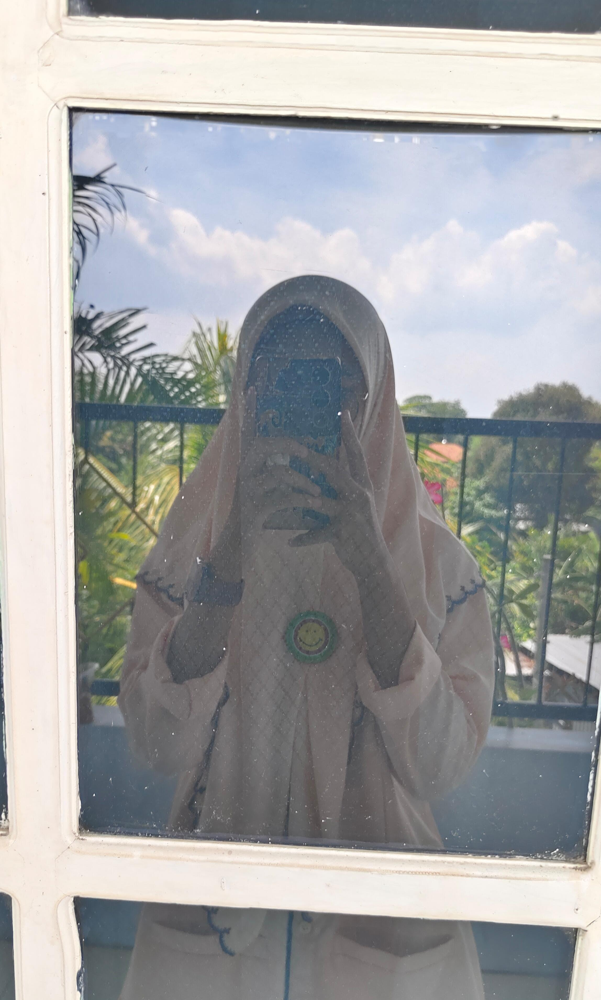

-
ta' parani
"Naila itu seperti senja — tak pernah gagal membuat hati tenang meski hanya dipandang dari kejauhan."
-
ngelamun ae
"Ada keindahan sederhana dalam diri Naila, yang tak butuh sorotan untuk tetap bersinar."
-

makan om..
"Naila hadir bukan sekadar mempercantik hari, tapi juga memberi makna di balik setiap senyuman."
-
mamba mode
"Di mata dunia, mungkin Naila hanya satu dari banyak wanita. Tapi di mataku, dia adalah satu-satunya keindahan yang tak tergantikan."
-
pashmina mode
"Cantiknya Naila bukan hanya di wajah, tapi juga di hati dan tutur katanya."
-

seragam NHM
"Keindahan Naila tak bisa disamakan dengan bunga, bintang, atau lukisan. Karena dia adalah keindahan itu sendiri."
-
atapu..
"Naila itu seperti angin sore di musim panas — menenangkan, menyegarkan, dan selalu ditunggu."
-
ta' kokop ta?
"Ada cara Naila membuat dunia terasa lebih indah, hanya dengan menjadi dirinya sendiri."
-
jan diulangi lgi ya..
"Setiap tawa Naila adalah musik paling merdu yang pernah kudengar."
-
black almet nih bos..
"Naila mengajarkan bahwa keindahan sejati bukan soal penampilan, tapi tentang ketulusan hati yang terpancar."
-
cakep kan mas?
"Di antara ribuan bintang di malam yang gelap, Naila tetap jadi cahaya paling terang di mataku."
-
matur nuwun..
"Tak ada kata seindah Naila, tak ada keindahan seindah dirinya. Dia adalah definisi dari pesona yang tak lekang oleh waktu."